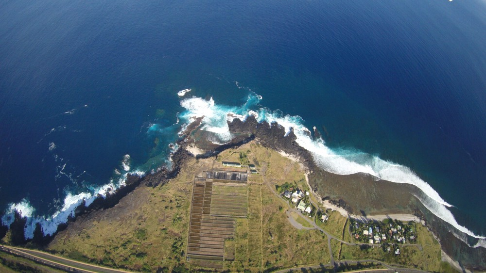
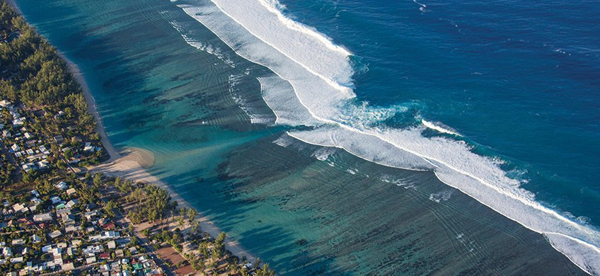
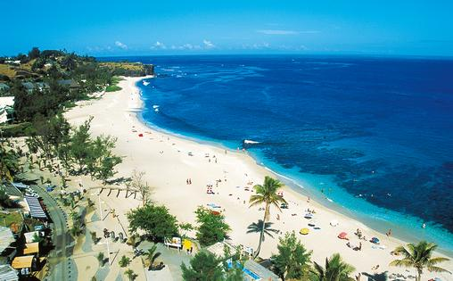
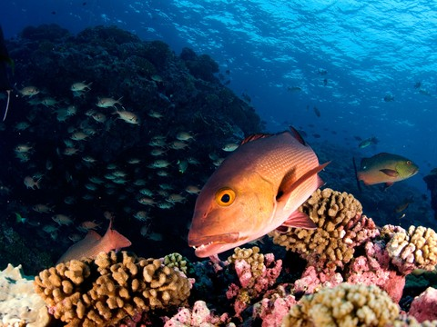
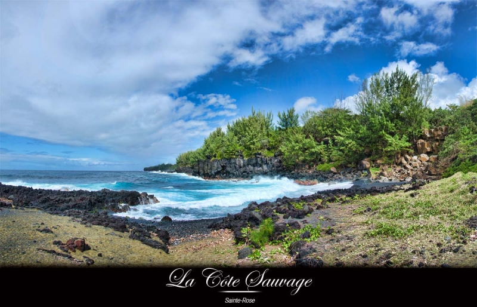
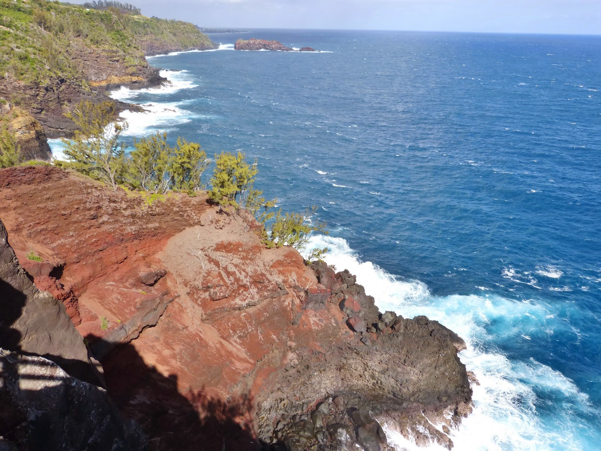

L'île de La Réunion est un département français d'outre-mer du sud-ouest de l'Océan Indien, située dans l'archipel des Mascareignes à environ 700 kilomètres à l'est de Madagascar. Plus souvent connu pour la qualité de ses randonnées que pour ses sites de plongée, La Réunion possède pourtant des fonds marins variés, des épaves, et une topographie marine très intéressante car issue d'activités volcaniques 'récentes'. Créée en 2007, la réserve naturelle marine de La Réunion protège une grande partie de la barrière corallienne de la côte occidentale de l'île et vous permettra de voir, notamment, des tortues!
L'Ouest
Plonger à La Réunion, c’est d’abord rechercher une pratique familiale, typique, très conviviale et de tous niveaux. Vous trouverez de nombreuses infrastructures notamment sur la côte ouest (Saint-Gilles, Saint Leu) et au sud (Saint Pierre). Les principaux spots sont concentrés sur la baie de Saint-Leu, la Pointe au Sel et la pointe des Châteaux. Le tombant de la Pointe au Sel au sud et la Pointe des Châteaux au nord, ou encore le Sec Jaune vont vous permettre de découvrir la barrière de corail avec beaucoup de volume, d'espace bleu qui réserve (souvent) de grosses surprises comme des thons, des espadons ou encore, pourquoi pas, un requin! Ces sites profitent généralement des plus belles visibilités de l'île.

Saint Leu
Où : Pointe au sel
Temps de la plongée : 30 à 45 mn
Prix : 60€
Note : ♥ ♥ ♥ ♥ ♥
La Pointe au Sel par Jean-Marc Charel, président du Comité des sports sous-marins Jean-Marc Charel, préside le Comité régional d’études et de sports sous-marins de la Réunion. Il est à ce titre le représentant de toutes les associations locales de plongeurs. Pour lui, le plus beau site se situe au sud de Saint-Leu. “Pour moi, c’est la Pointe au Sel évidemment. Une plongée qui se fait entre 25 et 40 mètres sur un magnifique tombant vertical qui descend à 60 mètres de fond. Il y a énormément de vie, on y fait vraiment des rencontres extraordinaires. Le week-end dernier, par exemple, vous en avez entendu parler, on a filmé un requin-baleine de plus de 8 mètres. C’est une plongée plutôt réservée aux plongeurs expérimentés. La première fois que je l’ai faite, ça devait être en 1994. Depuis, je pense que j’y ai fait entre 1000 et 1200 plongées, c’est vraiment mon jardin”. Learn more.
Pour toutes réservations eventuelle, choisisez vos dates à l'aide du calendrier qui ce trouve ci-dessous

Saint Gilles
Où : La passe de l’Ermitage
Temps de la plongée : 30 à 45 mn
Prix : 75€
Note : ♥ ♥ ♥ ♥ ♥
La passe de l’Ermitage par Bruce Cauvin de la Réserve marine Chef de la Cellule Animation-Sensibilisation à la Réserve nationale marine de la Réunion, Bruce Cauvin en connaît les moindres recoins. Mais sa préférence est nette : “Pour moi, le plus beau site, c’est la passe de l’Ermitage. C’est celui sur lequel on peut voir beaucoup d’espèces différentes de poissons et souvent des tortues marines. On peut y voir des poissons de récif bien sûr mais aussi quelques pélagiques comme les thons à dents de chien. Une passe, c’est un endroit clé qui attire des petits prédateurs. Et puis le site présente un intérêt aussi pour son relief qui offre des caches aux poissons. On y croise aussi des raies aigles, des platax etc... C’est vraiment mon site préféré”. Bruce Cauvin fréquente maintenant les lieux depuis longtemps. “J’y ai plongé pour la première fois en 1998 à l’époque du Parc Marin”. Learn more.
Contacter nous et réservez à l'aide de notre calendrier

Saint Gilles
Où : La tour de Boucan
Temps de la plongée : 30 à 45 mn
Prix : 60€
Note : ♥ ♥ ♥ ♥ ♥
La Tour de Boucan par Philippe Doki-Thonon, président de l’UMIH C’est le spot de prédilection de Philippe Doki-Thonon, un homme aux multiples casquettes, investi dans le tourisme en tant que président de l’UMIH. Il est également patron du club de plongée O’sea bleu, situé à Saint-Gilles. “On trouve sur ce site une patate imposante à moins de 20 mètres de profondeur”, explique le passionné. L’itinéraire qui y conduit présente également un grand intérêt. “On longe un petit tombant assez riche”, indique Philippe Doki-Thonon, appréciant aussi l’exploration des épaves disséminées au large de nos côtes. A ses yeux, La Réunion offre ainsi “une grande diversité de sites”. “On ne s’ennuie pas. Moi je plonge une à deux fois par semaine. Quand je suis sous l’eau, je suis heureux”. Learn more.
Pour toutes réservations eventuelle, choisisez vos dates à l'aide du calendrier qui ce trouve ci-dessous

Saint Leu
Où : L‘épave Antonio Lorenzo
Temps de la plongée : 30 à 45 mn
Prix : 80€
Note : ♥ ♥ ♥ ♥ ♥
L’épave Antonio Lorenzo par Julie Closse, membre de la cellule animation à la Réserve marine Les fonds saint-leusiens abritent une épave de plus de cinquante mètres, couchée sur le flanc babord, à - 38 mètres. “C’est la plongée qui m’offre le plus de sensations”, confie Julie Closse, œuvrant dans la cellule animation au sein de la Réserve naturelle marine. “On aperçoit tout d’abord l’ombre de l’épave puis celle-ci apparaît, telle une oasis dans un désert de sable”. Thons, carangues et autres pélagiques y évoluent gracieusement. Cet ancien palangrier a été coulé en 1999 d’où le stade encore embryonnaire du récif corallien. Learn more.
Pour toutes réservations eventuelle, choisisez vos dates à l'aide du calendrier qui ce trouve ci-dessous

Saint Gilles
Où : L’épave du Hai Siang
Temps de la plongée : 45 à 60 mn
Prix : 70€
Note : ♥ ♥ ♥ ♥ ♥
L’épave du Haï Siang par Pascale Chabanet, directrice de l’IRD-Réunion Spécialiste en écologie des récifs coralliens, Pascale Chabanet dirige les laboratoires réunionnais de l’Institut de Recherche pour le Développement. Elle plonge essentiellement dans le cadre de ses recherches mais garde un souvenir marquant d’une plongée de loisirs. ”Ça remonte à déjà dix ans, c’était sur le Haï Siang. C’est une épave qui est posée à plus de 50 mètres de fond devant Saint-Gilles. Le bateau est encore est très bon état, avec son mât, etc. C’est une plongée magique. En plus avec l’ivresse des profondeurs, on a vraiment la sensation de remonter le temps, d’être à bord. Et puis il y a beaucoup de poissons, donc quand l’eau est claire, c’est extraordinaire. On y voit des espèces typiques des épaves comme les mérous et petits poissons des récifs. Une épave, de toute façon, c’est un récif artificiel”. Learn more.
Pour toutes réservations eventuelle, choisisez vos dates à l'aide du calendrier qui ce trouve ci-dessous

Saint Leu
Où : Le sec Jaune
Temps de la plongée : 35 à 50 mn
Prix : 65€
Note : ♥ ♥ ♥ ♥ ♥
Le Sec Jaune, à Saint-Leu par Romain Vandaele, moniteur Romain Vandaele, moniteur à l’Excelsus (Saint-Leu), aime particulièrement le Tombant de la Pointe au sel. Sec Jaune figure également parmi ses spots favoris. “Il y a un beau massif rocheux avec un relief accidenté. Ce site abrite toutes sortes d’espèces, comme des raies, des tortues. Le banc de sable crée une atmosphère particulière”, décrit-il. Par ailleurs, Sec Jaune reste accessible à tous puisqu’il est même ouvert aux baptêmes. A l’image de Sec jaune, Romain Vandaele apprécie également la Grotte à Nono, cachée entre la Pointe des Châteaux et la Grande Ravine. Le professionnel est séduit par “l’ambiance granitique et les tunnels de lave”. Une sortie à entreprendre uniquement par beau temps. Learn more.
Pour toutes réservations eventuelle, choisisez vos dates à l'aide du calendrier qui ce trouve ci-dessous
L'Est
Les plongeurs plus confirmés et les photographes sous marin pourront eux partir à la découverte des fonds sous-marins de Sainte-Rose voire explorer les coulées volcaniques sous-marines, ou trouveront leur bonheur avec des mammifères marins comme les dauphins ou les baleines (franches ou à bosses), ou encore des sujets macros endémiques. Un vrai régal de destination plongée!

Sainte Rose
Où : La coulée de 1977 – sainte rose
Temps de la plongée : 41 à 62 mn
Prix : 74€
Note : ♥ ♥ ♥ ♥ ♥
La coulée de 1977 à Sainte-Rose par Emmanuel Rothé Basé au Port, le gérant du club le Dodo Palmé organise régulièrement des bivouacs de l’autre côté de l’île. Il délocalise tout le matériel nécessaire afin de pouvoir explorer les coulées de Sainte-Rose, et notamment celles de 1977. “Nous plongeons dans les anciens tunnels de lave, la profondeur est peu élevée”, indique-t-il. Le niveau 1 suffit pour profiter de ce site “original et spécifique” encore très sauvage et du coup plus préservé que la côte Ouest soumise à forte pression humaine.
Pour toutes réservations eventuelle, choisisez vos dates à l'aide du calendrier qui ce trouve ci-dessous
Sud
Nous partons du port de Saint-Pierre pour plonger selon les envies et les conditions de mer entre Saint-Pierre et Petite-île, cela va vous permettre de découvrir la barrière de corail avec beaucoup de volume, d'espace bleu qui réserve (souvent) de grosses surprises comme des thons, des espadons ou encore, pourquoi pas, un requin! Ces sites profitent généralement des plus belles visibilités de l'île.

Saint Pierre
Où : Le jardin de corail à Grand bois
Temps de la plongée : 30 à 45 mn
Prix : 62
€
Note : ♥ ♥ ♥ ♥ ♥
Le Jardin de corail à Grands-Bois Par Julien Girardo, gérant du club Kazabul Parole de sudiste ! Pour Julien Girardo, gérant de Kazabul, à Saint-Pierre, les sites de plongée du Sud sont mieux préservés que ceux de l’Ouest. La raison en est simple. "C’est probablement grâce aux conditions météo. Il y a 200 jours de vent par an à Saint-Pierre ce qui limite les sorties des pêcheurs ou des plongeurs", affirme-t-il. Mais s’il ne devait retenir qu’un seul endroit pour plonger ça serait Le Jardin de corail également connu sous le nom du Bénitier. Situé à l’entrée de Grands-Bois, au début du lagon, le site est aussi bien adapté aux débutants qu’aux plongeurs confirmés. La profondeur varie de 2 à 35 mètres. Et puis, "le plateau corallien est magnifique. Il est particulièrement préservé. C’est un lieu incontournable", assure Julien Girardo. Les familiers des lieux apprécient les nombreux coraux et poissons et peuvent parfois apercevoir des raies et des tortue. "Il y a beaucoup de diversité", confirme l’expert.
Pour toutes réservations eventuelle, choisisez vos dates à l'aide du calendrier qui ce trouve ci-dessous